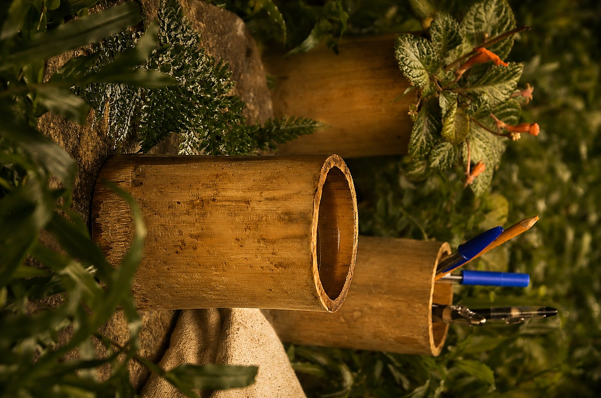
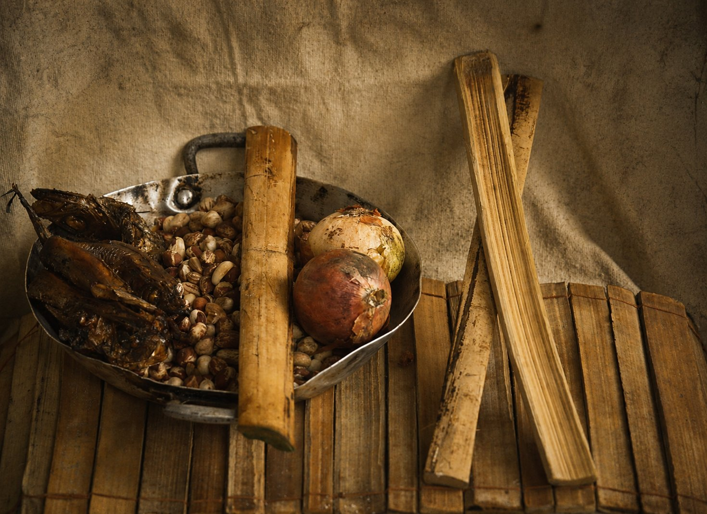
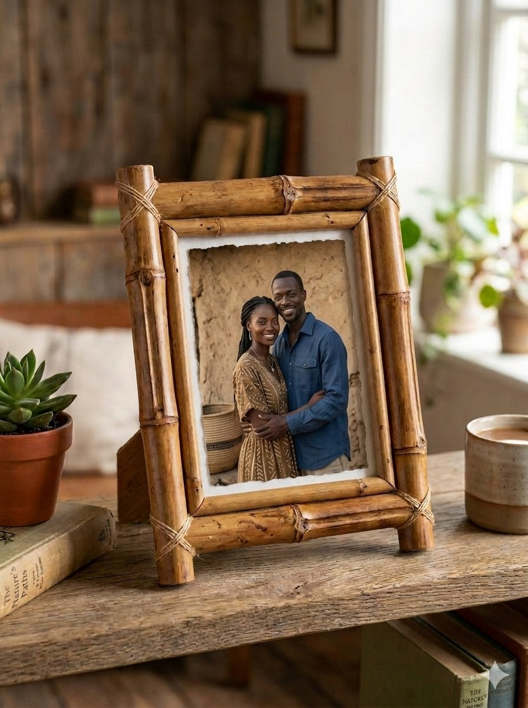

Ici, tout commence par la matière.
Nous croyons que la terre, le bois, le bambou et la fibre ne sont pas de simples ressources physiques : ils sont les gardiens silencieux de notre histoire, de notre culture et de notre identité. Chaque matière porte en elle le geste de l’artisan qui l’a façonnée et la mémoire de la forêt qui l’a vue naître.
The Forest Child est né d'un constat urgent : nos savoir-faire ancestraux s'effacent et nos matières locales sont sous-valorisées. Face à l'uniformisation du monde, nous choisissons la résistance créative. À travers la photographie documentaire, nous immortalisons le geste noble et la mémoire des mains. À travers le design contemporain, nous transformons la matière brute en objets d'exception.
Notre ambition est de structurer The Forest Child autour de 5 pôles d'excellence complémentaires pour maximiser notre impact culturel, économique et social :
La raréfaction des récits authentiques et la sous-valorisation économique des matières premières et des artisans locaux.
Créer des objets et des récits à forte valeur culturelle, économique et sociale en connectant artisanat d'art et design contemporain.
Notre marché est déjà validé par des premiers succès tangibles (gobelets, fioles, pastules et cadres en bambou).

Matière : Bambou & essences locales.
Récipients durables et organiques conçus pour le quotidien. Ils matérialisent notre volonté de remplacer le plastique par des lignes pures et biodégradables.

Matière : Bambou brut sélectionné.
L'excellence du design vernaculaire : une seule pastule sert d'ustensile de cuisine (torréfaction), une paire devient un instrument rythmique, et leur assemblage tissé est utilisé en kinésithérapie traditionnelle pour stabiliser les fractures.

Matière : Bambou et attaches végétales.
Écrins minimalistes destinés à sublimer nos tirages de photographie documentaire. Ils capturent l'esprit de la forêt pour faire entrer la mémoire du geste dans les intérieurs modernes.
L'investissement demandé est entièrement injecté dans l'appareil productif pour garantir une autonomie immédiate.
| Poste de dépense | Montant (FCFA) | Objectif Stratégique |
|---|---|---|
| Outillage Technique (Scie, Visseuse, Pistolet à peinture) | 150 000 | Augmenter la vitesse de production de 300% et professionnaliser les finitions. |
| Fonds de Roulement & Matières | 40 000 | Sécuriser l'achat de bambou, d'argile et d'essences locales pour les collections. |
| Déplacements & Logistique | 35 000 | Assurer le sourcing direct auprès des artisans dans les zones rurales. |
| Digital & Communication (Site, Identité) | 75 000 | Déployer notre vitrine mondiale pour capter les commandes internationales. |
| TOTAL | 300 000 | Validation du palier 1 de structuration. |
The Forest Child n'est pas un simple projet ; c'est un manifeste économique et culturel en action. Lever 300 000 FCFA ne représente pas une dépense, mais un levier de productivité immédiat pour industrialiser un savoir-faire unique.
Le futur de la création africaine commence ici.